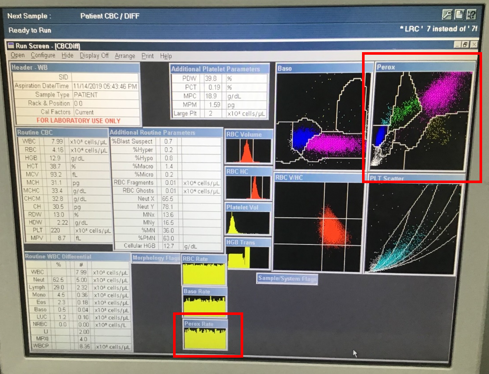
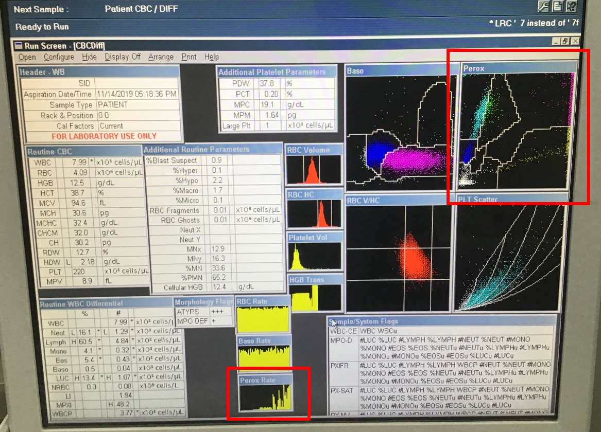
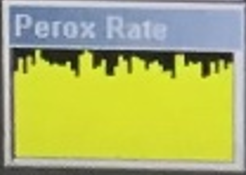
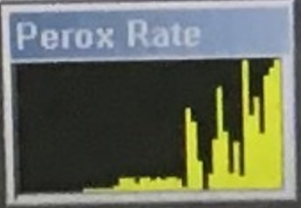
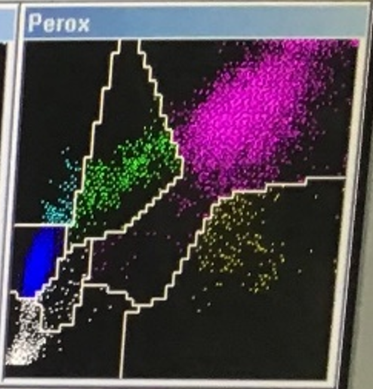
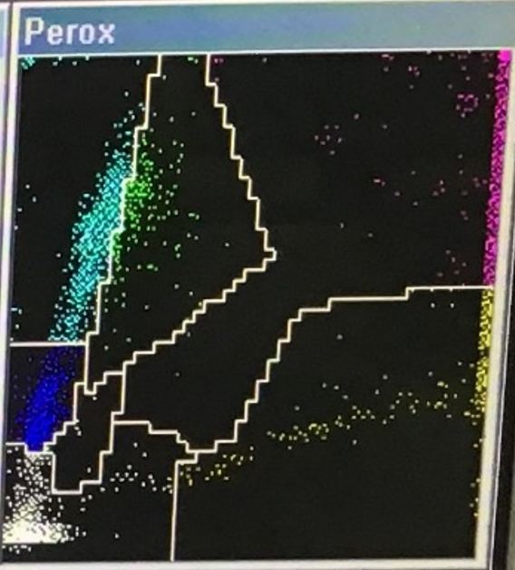

| Bình thường | Perox 1 không lên được buồng | Perox 2 không lên được buồng | Perox 3 không lên được buồng | Không có cả Perox 2 & 3 ở buồng | Perox sheath không bơm lên được buồng | |
|---|---|---|---|---|---|---|
| Run Screen |  |  | ||||
| Perox Rate |  |  | ||||
| Perox Diagram |  |  | ||||
| Cách xử lý | Click here |